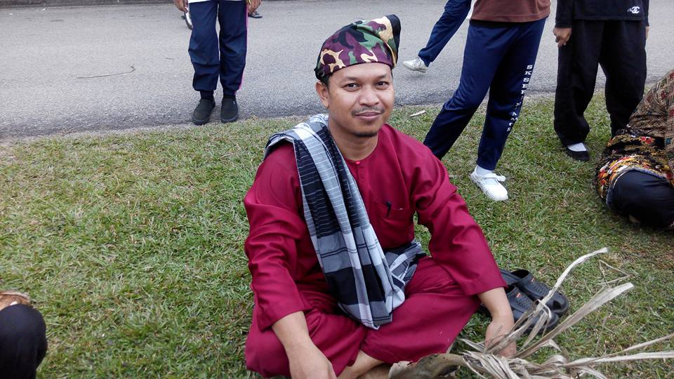
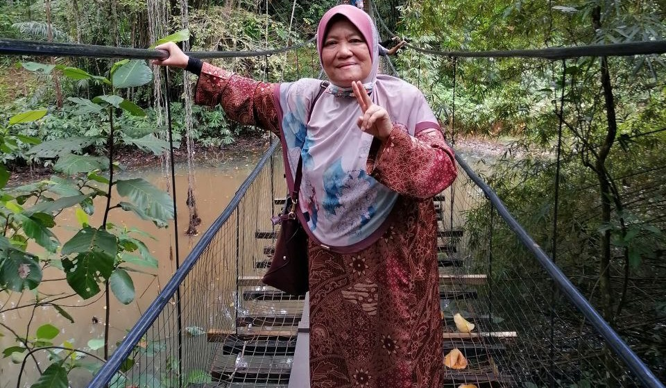
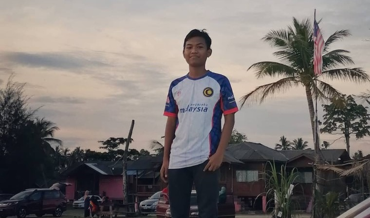
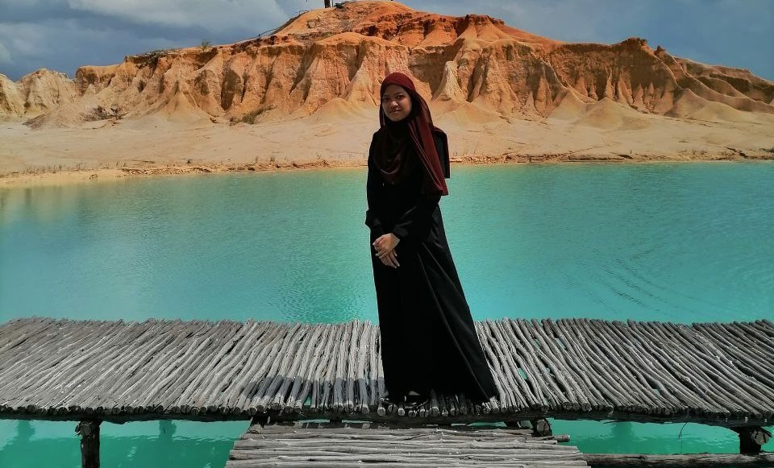

MOHD NAZARUDDIN BIN TAIB
My father
My Father was a principal at Sekolah Agama Serom 8.
Have you ever heard about "father is a daughter's first love"? If yes, then we all agree on that statement, right? same as me. My father is my first love because of how caring he is, kind, and gentlemanly.
He has been my role model since I was a kid. Wanna know why? Because of how busy he is, he will always find time to spend time with us and take care of us on his own. He said, "I don't want anyone else to take care of my kids besides mom and dad because not all nannies can be trusted." Also, when he gets mad at us, he will scold us, but at the end, he will apologise and tell us about the story of prophet Muhammad and his friends so we can take a lesson from the story.


NORHASHIMA BINTI SIMON
My Mother
My mother used to teach Malay in Primary School (SKS 3), but now she is retired.
She used to be a library teacher at SK Serom 3 (SKS 3)
She is a soft-hearted person but at the same time, she is very fierce. Have you ever heard of this quote?" A mother's love is the foundation that her child's life is built on"." A mother's love is the safety net that catches us when we fall". "A mother's love is more beautiful than any fresh flower". This quote suits my mother the best because every time I have a hard time dealing with emotions, she will come and hug me tightly until I am calm.
MOHD HAZIQ AIMAN BIN MOHD NAZARUDDIN
My Brother
My brother is studying software engineering at UTHM Batu Pahat
Having him as my brother is such a blessing for me. Having him is like having a guardian angel. he will always be there to protect me and guide me when I don't know where to go. He always helps me learn especially science and anything related to science and computer subjects. He will always be there to help me understand the subject and I got an A for my science subject in SPM because of him.
“I don’t believe an accident of birth makes people sisters or brothers. It makes them siblings, gives them mutuality of parentage. Sisterhood and brotherhood is a condition people have to work at.”—Maya Angelou


NURUL ZAHIDAH BINTI MOHD NAZARUDDIN
My Younger Sister
She is a gifted child in our family
Why did I call her a gifted child? because she is extremely smart, especially in Arabic or religious subjects like Usuluddin and Syariah. She just finished SPM at SMA Lughatul Quran and guess what? She got an A in almost all Arabic subjects! Incredible right? She is also so good at sports, indoor and outdoor games! She once won the top 10 in chess for Majlis Sukan Sekolah Daerah (MSSD) and not just that, she also got top 5 in a ping pong competition for Majlis Sukan Sekolah Daerah (MSSD)
“Having a sister is like having a best friend you can’t get rid of. You know whatever you do, they’ll still be there.”
—Amy Li
My younger sister is also my gossip partner hehe. We can talk for hours nonstop especially when we did not meet each other in a long time. She will always be my best partner in crime for sure.
My family love going travel in the country or to another country so we can relax and spend time with each other on holidays